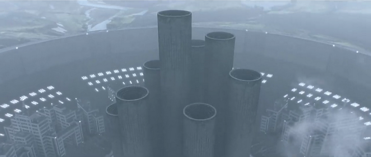

DEMA es una ciudad fortaleza, aislada y gobernada con puño de hierro por los Nueve Obispos. Su estructura es opresiva, diseñada para mantener a sus habitantes atrapados en un ciclo interminable de control y desesperanza.
Las torres de DEMA son más que simples construcciones: representan la vigilancia constante y el poder absoluto de los Obispos. Se elevan sobre la ciudad como guardianes silenciosos, asegurando que nadie escape y que el orden impuesto por Blurryface se mantenga. Cada torre es un símbolo del dominio de un Obispo, reflejando su influencia sobre la población y reforzando la idea de que no hay salida.
Sin embargo, entre la desesperación, persiste la resistencia. Clancy y otros buscan una forma de romper el ciclo y encontrar un camino hacia la libertad, desafiando el control de DEMA y la sombra de sus torres.